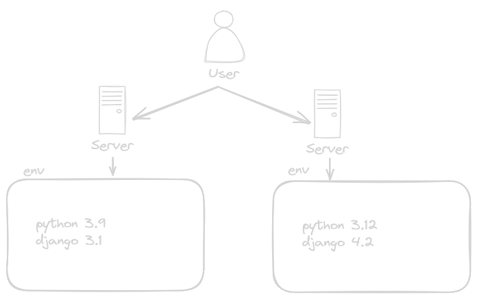
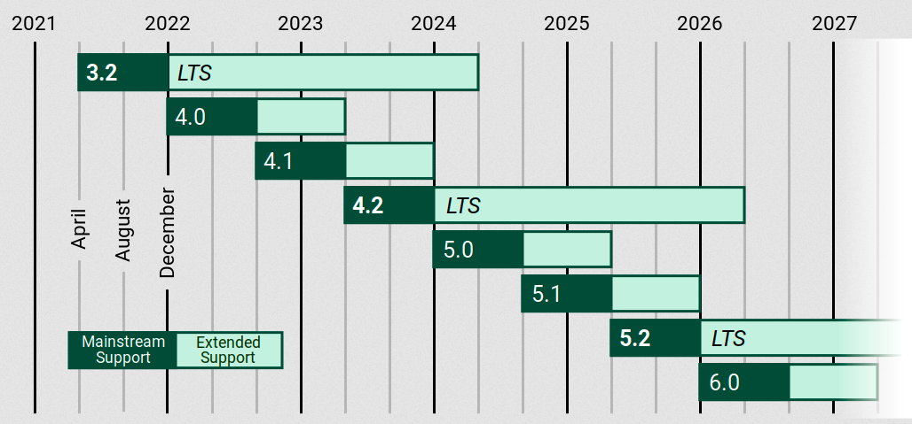
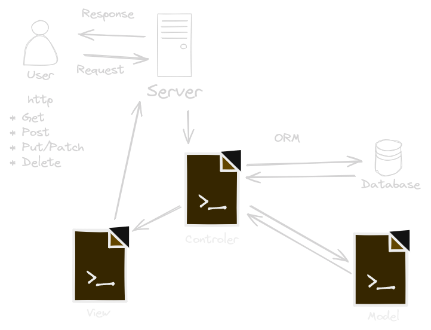

Django 🐍
Objetivo 🎯
En esta sección aprenderemos los conceptos básicos de Django y cómo utilizarlo para desarrollar aplicaciones web de forma eficiente y estructurada.
Índice 📚
- Creación de Entornos Virtuales
- Versiones de Django
- Comandos Básicos con Django
- Archivo settings.py
- Archivos wsgi.py y asgi.py
- El Modelo MTV vs MVC
Creación de Entornos Virtuales
En esta sección, aprenderemos a crear entornos virtuales para nuestros proyectos Django.
Creación de Entornos Virtuales
Introducción a los entornos virtuales
Los entornos virtuales son herramientas que nos permiten aislar las dependencias de nuestros proyectos, garantizando que cada proyecto pueda tener su propio conjunto de dependencias sin interferir con otros proyectos.
¿Por qué usar entornos virtuales?
Es importante utilizar entornos virtuales para evitar conflictos entre las dependencias de diferentes proyectos y mantener un entorno de desarrollo limpio y organizado.
Creación de un entorno virtual con virtualenv
virtualenv myenv
El comando virtualenv nos permite crear un nuevo
entorno virtual con el nombre especificado.
Creación de un entorno virtual con venv
python -m venv env
El comando venv nos permite crear un nuevo entorno
virtual con el nombre especificado de manera nativa.
Activación y desactivación del entorno virtual
.\env\Scripts\activate
Para activar el entorno virtual, utilizamos la ruta al directorio
del entorno virtual y el archivo activate.
deactivate
Para desactivar el entorno virtual, simplemente ejecutamos el
comando deactivate.
Instalación de paquetes en un entorno virtual
pip install package-name
Utilizamos el comando pip install dentro del entorno
virtual para instalar paquetes específicos necesarios para nuestro
proyecto.
Consideraciones adicionales para el manejo de entornos virtuales
Es importante tener en cuenta la gestión de dependencias y la documentación adecuada del entorno virtual para facilitar el trabajo colaborativo y el mantenimiento del proyecto a largo plazo.
El arcihvo requirements.tx tiene mucha importancia en esta sección.
Ejemplos prácticos de uso de entornos virtuales
En esta sección, exploraremos ejemplos prácticos de cómo utilizar entornos virtuales en proyectos Django para garantizar un desarrollo limpio y organizado.
Versiones LTS de Django
Las versiones LTS (Long-Term Support) de Django reciben soporte a largo plazo, lo que significa que se proporcionan actualizaciones de seguridad y correcciones de errores durante un período prolongado de tiempo.
Calendario de lanzamiento de Django
Mantenimiento de proyectos en versiones antiguas de Django
A medida que se lanzan nuevas versiones de Django, es posible que los proyectos existentes necesiten actualizarse para aprovechar las nuevas características y correcciones de errores.
Actualización de proyectos a versiones más recientes de Django
La actualización de proyectos a versiones más recientes de Django puede implicar cambios en el código, actualizaciones de bibliotecas y adaptaciones a nuevas prácticas y estándares.
Uso de django-admin
Para crear un nuevo proyecto, simplemente ejecuta el comando
django-admin startproject nombre_del_proyectoDe manera similar, para crear una nueva aplicación dentro de un proyecto, puedes usar el comando.
python manage.py startapp nombre_de_la_aplicacionIniciar un servidor de desarrollo
Django proporciona un servidor de desarrollo integrado que puede ser iniciado con el comando
python manage.py runserverEl arcihvo settings.py
El archivo settings.py es el archivo de configuración principal de un proyecto de Django.
Configuración de aplicaciones instaladas
En esta sección se enumeran todas las aplicaciones instaladas en tu proyecto de Django.
Cada aplicación puede ser una aplicación de terceros instalada a través de pip o una aplicación personalizada creada dentro del proyecto.
Configuración de la base de datos
Una de las configuraciones más importantes que se encuentran en este archivo es la configuración de la base de datos.
Aquí puedes especificar qué tipo de base de datos utilizará tu aplicación, así como la conexión y las credenciales necesarias para acceder a ella.
Configuración de archivos estáticos y medios
Django proporciona opciones para configurar la gestión de archivos estáticos y de medios en tu aplicación.
Los archivos estáticos son archivos CSS, JavaScript, imágenes y otros recursos que se sirven directamente desde el servidor web.
Configuración de internacionalización y localización
Django incluye soporte integrado para la internacionalización (i18n) y la localización (l10n) de tus aplicaciones.
En settings.py, puedes configurar el idioma predeterminado de tu aplicación, así como definir qué traducciones están disponibles y dónde se encuentran los archivos de traducción.
Configuración de seguridad
La seguridad es una preocupación importante al desarrollar aplicaciones web.
En settings.py, puedes configurar diversas opciones como la clave secreta, que se utiliza para cifrar datos sensibles, así como configuraciones de middleware de seguridad, políticas de cookies, protección contra ataques CSRF y mucho más.
Archivo wsgi.py
El archivo wsgi.py es un punto de entrada para los servidores web compatibles con WSGI (Web Server Gateway Interface) para servir tu aplicación de Django.
WSGI es una especificación que define cómo los servidores web pueden comunicarse con aplicaciones web escritas en Python.
Archivo asgi.py
El archivo asgi.py es similar al archivo wsgi.py, pero está diseñado para servidores web compatibles con ASGI (Asynchronous Server Gateway Interface).
ASGI es una especificación que permite la comunicación asincrónica entre servidores web y aplicaciones web en Python.
Diferencia entre MTV y MVC
Diferencia entre MTV y MVC

Diferencia entre MTV y MVC
Aunque Django utiliza el patrón MTV (Modelo, Template, Vista) y MVC (Modelo-Vista-Controlador) es un patrón arquitectónico similar, existen algunas diferencias clave entre ambos:
Diferencia entre MTV y MVC
- Modelo: En MVC, el modelo representa la capa de datos y la lógica de negocio. En MTV, el modelo sigue siendo la capa de datos y la lógica de negocio, pero se integra más estrechamente con el ORM de Django.
Diferencia entre MTV y MVC
- Vista: En MVC, la vista es responsable de presentar los datos al usuario y manejar la interacción del usuario. En MTV, la vista se encarga de recuperar los datos del modelo y pasarlos a la plantilla para su renderizado.
Diferencia entre MTV y MVC
- Controlador: En MVC, el controlador es responsable de manejar las solicitudes del usuario y actualizar el modelo en consecuencia. En MTV, el controlador es más abstracto y se maneja en gran medida por el framework, con el enrutador de URL y las vistas como componentes clave.
Diferencia entre MTV y MVC
En resumen, aunque ambos patrones comparten algunos conceptos, el patrón MTV de Django proporciona una estructura más modular y flexible para el desarrollo de aplicaciones web.
¡Gracias!

Facilitador: Diego Saavedra
Correo: dsaavedra@codingsacademy.com